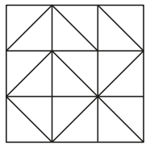

A square is divided into triangles $($see the figure$)$. How many ways are there to paint exactly one third of the square? Small triangles cannot be painted partially. 
To paint exactly one-third of the square is to paint exactly 6 small triangles out of 18. This can be done in $C_{18}^6$ = $\frac{18 \times 17 \times 16 \times 15 \times 14 \times 13}{1 \times 2 \times 3 \times 4 \times 5 \times 6 \times}$ = 18564 ways.
18564 ways.